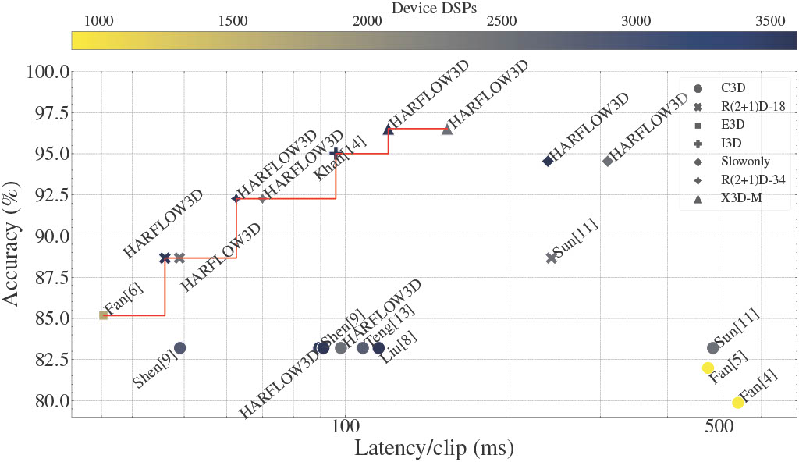

HARFLOW3D
2023–2025 est.3D convolutional neural networks are among the most accurate models for human action recognition in video, but they are heavy to run. HARFLOW3D is a toolflow that maps such models onto FPGAs with a streaming architecture designed around both the model and the target device.
Read more
It reads a 3D CNN in ONNX format together with a description of the FPGA and generates a design that minimises latency. The flow combines a 3D CNN parser, a performance and resource model, a scheduler for running 3D models on the generated hardware, a resource-aware optimisation engine and an automated route to synthesisable code. Experiments over many model and device pairs show broad support, including 3D CNNs that had never been mapped to FPGAs before, and latency competitive with hand-tuned designs, with up to 5× better performance than some earlier work.